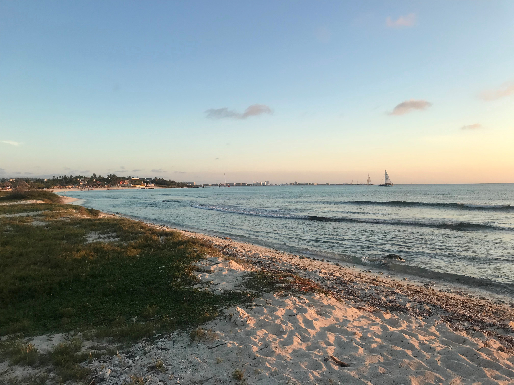

Beaches
Aruba's beaches are very versatile. Whether you want to have some fun in the sun and engage in some exciting water activities, or look for a quiet spot on a secluded beach; Aruba has it. Below, I have listed my favorites for you to enjoy.Rodgers Beach
There are no facilities on this beach. No lounge and palapa rentals. And honestly, that is exactly what I like about it. When I want a relaxing day on the beach with just me, myself and my cooler, I go here. On Sundays, many locals bring their families (and speakers, so skip Sundays if you want relaxation) for a nice Sunday BBQ. This beach is located right next to Baby Beach, so makes for a good combination of these two beaches.
Arashi Beach
If you are looking for a beach where the locals go, this is the beach for you. Bring some cold beers and watch the kitesurfers show off their skills as the sun goes down.
Tres Trapi
Crystalclear waters, palapas, turtles, fishes.. This beach will put you in full vacation mode! Make sure to arrive a bit early if you want some shade. Enjoy!